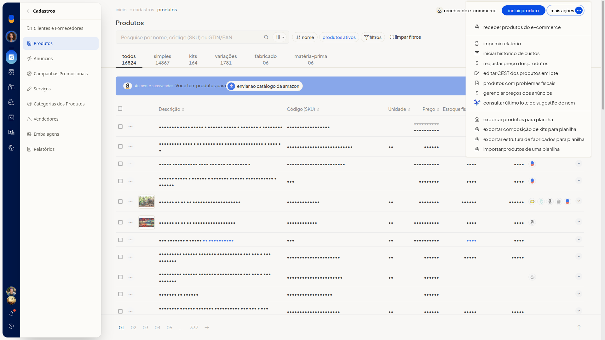
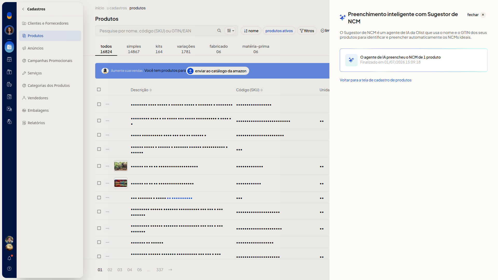

Consultar o último lote de sugestão de NCM
No ERP da Olist, você consulta o último lote de sugestão de NCM da Lis. No painel, você confere o processamento já concluído, com a quantidade de produtos que tiveram o NCM preenchido e a data e hora de término.
Instruções
-
Acesse Cadastros > Produtos.

-
Clique em Mais ações.

-
Clique em Consultar último lote de sugestão de ncm.
-
Confira o card no painel Preenchimento inteligente com Sugestor de NCM. Ele mostra a quantidade de produtos com NCM preenchido e a data e hora de término, sem abrir o detalhe dos produtos. Para voltar à listagem, acesse o link Voltar para a tela de cadastro de produtos.

Informações adicionais
- O painel informa que o agente de sugestão usa o nome do produto e o GTIN.